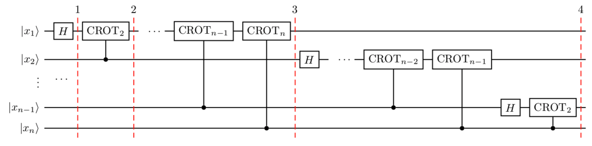

The Fourier transform occurs in many different versions throughout classical computing, in areas ranging from signal processing to data compression to complexity theory. The quantum Fourier transform (QFT) is the quantum implementation of the discrete Fourier transform over the amplitudes of a wavefunction. It is part of many quantum algorithms, most notably Shor's factoring algorithm and quantum phase estimation.
The discrete Fourier transform acts on a vector $(x_0, ..., x_{N-1})$ and maps it to the vector $(y_0, ..., y_{N-1})$ according to the formula
$$y_k = \frac{1}{\sqrt{N}}\sum_{j=0}^{N-1}x_j\omega_N^{jk}$$where $\omega_N^{jk} = e^{2\pi i \frac{jk}{N}}$.
Similarly, the quantum Fourier transform acts on a quantum state $\sum_{i=0}^{N-1} x_i \vert i \rangle$ and maps it to the quantum state $\sum_{i=0}^{N-1} y_i \vert i \rangle$ according to the formula
$$y_k = \frac{1}{\sqrt{N}}\sum_{j=0}^{N-1}x_j\omega_N^{jk}$$with $\omega_N^{jk}$ defined as above. Note that only the amplitudes of the state were affected by this transformation.
This can also be expressed as the map:
$$\vert x \rangle \mapsto \frac{1}{\sqrt{N}}\sum_{y=0}^{N-1}\omega_N^{xy} \vert y \rangle$$Or the unitary matrix:
$$ U_{QFT} = \frac{1}{\sqrt{N}} \sum_{x=0}^{N-1} \sum_{y=0}^{N-1} \omega_N^{xy} \vert y \rangle \langle x \vert$$Consider how the QFT operator as defined above acts on a single qubit state $\vert\psi\rangle = \alpha \vert 0 \rangle + \beta \vert 1 \rangle$. In this case, $x_0 = \alpha$, $x_1 = \beta$, and $N = 2$. Then,
$$y_0 = \frac{1}{\sqrt{2}}\left( \alpha \exp\left(2\pi i\frac{0\times0}{2}\right) + \beta \exp\left(2\pi i\frac{1\times0}{2}\right) \right) = \frac{1}{\sqrt{2}}\left(\alpha + \beta\right)$$and
$$y_1 = \frac{1}{\sqrt{2}}\left( \alpha \exp\left(2\pi i\frac{0\times1}{2}\right) + \beta \exp\left(2\pi i\frac{1\times1}{2}\right) \right) = \frac{1}{\sqrt{2}}\left(\alpha - \beta\right)$$such that the final result is the state
$$U_{QFT}\vert\psi\rangle = \frac{1}{\sqrt{2}}(\alpha + \beta) \vert 0 \rangle + \frac{1}{\sqrt{2}}(\alpha - \beta) \vert 1 \rangle$$This operation is exactly the result of applying the Hadamard operator ($H$) on the qubit:
$$H = \frac{1}{\sqrt{2}}\begin{bmatrix} 1 & 1 \\ 1 & -1 \end{bmatrix}$$If we apply the $H$ operator to the state $\vert\psi\rangle = \alpha \vert 0 \rangle + \beta \vert 1 \rangle$, we obtain the new state:
$$\frac{1}{\sqrt{2}}(\alpha + \beta) \vert 0 \rangle + \frac{1}{\sqrt{2}}(\alpha - \beta) \vert 1 \rangle \equiv \tilde{\alpha}\vert 0 \rangle + \tilde{\beta}\vert 1 \rangle$$Notice how the Hadamard gate performs the discrete Fourier transform for $N = 2$ on the amplitudes of the state.
So what does the quantum Fourier transform look like for larger $N$? Let's derive a circuit for $N=2^n$, $QFT_N$ acting on the state $\vert x \rangle = \vert x_1\ldots x_n \rangle$ where $x_1$ is the most significant bit.
$$ \begin{aligned} QFT_N\vert x \rangle & = \frac{1}{\sqrt{N}} \sum_{y=0}^{N-1}\omega_N^{xy} \vert y \rangle \\ & = \frac{1}{\sqrt{N}} \sum_{y=0}^{N-1} e^{2 \pi i xy / 2^n} \vert y \rangle ~\text{since}\: \omega_N^{xy} = e^{2\pi i \frac{xy}{N}} \:\text{and}\: N = 2^n \\ & = \frac{1}{\sqrt{N}} \sum_{y=0}^{N-1} e^{2 \pi i \left(\sum_{k=1}^n y_k/2^k\right) x} \vert y_1 \ldots y_n \rangle \:\text{rewriting in fractional binary notation}\: y = y_1\ldots y_n, y/2^n = \sum_{k=1}^n y_k/2^k \\ & = \frac{1}{\sqrt{N}} \sum_{y=0}^{N-1} \prod_{k=1}^n e^{2 \pi i x y_k/2^k } \vert y_1 \ldots y_n \rangle \:\text{after expanding the exponential of a sum to a product of exponentials} \\ & = \frac{1}{\sqrt{N}} \bigotimes_{k=1}^n \left(\vert0\rangle + e^{2 \pi i x /2^k } \vert1\rangle \right) \:\text{after rearranging the sum and products, and expanding} \sum_{y=0}^{N-1} = \sum_{y_1=0}^{1}\sum_{y_2=0}^{1}\ldots\sum_{y_n=0}^{1} \\ & = \frac{1}{\sqrt{N}} \left(\vert0\rangle + e^{\frac{2\pi i}{2}x} \vert1\rangle\right) \otimes \left(\vert0\rangle + e^{\frac{2\pi i}{2^2}x} \vert1\rangle\right) \otimes \ldots \otimes \left(\vert0\rangle + e^{\frac{2\pi i}{2^{n-1}}x} \vert1\rangle\right) \otimes \left(\vert0\rangle + e^{\frac{2\pi i}{2^n}x} \vert1\rangle\right) \end{aligned} $$The circuit that implements QFT makes use of two gates. The first one is a single-qubit Hadamard gate, $H$, that you already know. From the discussion in Example 1 above, you have already seen that the action of $H$ on the single-qubit state $\vert x_k\rangle$ is
$$H\vert x_k \rangle = \vert0\rangle + \exp\left(\frac{2\pi i}{2}x_k\right)\vert1\rangle$$The second is a two-qubit controlled rotation $CROT_k$ given in block-diagonal form as
$$CROT_k = \left[\begin{matrix} I&0\\ 0&UROT_k\\ \end{matrix}\right]$$where
$$UROT_k = \left[\begin{matrix} 1&0\\ 0&\exp\left(\frac{2\pi i}{2^k}\right)\\ \end{matrix}\right]$$The action of $CROT_k$ on the two-qubit state $\vert x_jx_k\rangle$ where the first qubit is the control and the second is the target is given by
$$CROT_k\vert 0x_j\rangle = \vert 0x_j\rangle$$and
$$CROT_k\vert 1x_j\rangle = \exp\left( \frac{2\pi i}{2^k}x_j \right)\vert 1x_j\rangle$$Given these two gates, a circuit that implements an n-qubit QFT is shown below.

The circuit operates as follows. We start with an n-qubit input state $\vert x_1x_2\ldots x_n\rangle$.
The steps to creating the circuit for $\vert y_1y_2y_3\rangle = QFT_8\vert x_1x_2x_3\rangle$ would be:
The example above demonstrates a very useful form of the QFT for $N=2^n$. Note that only the last qubit depends on the values of all the other input qubits and each further bit depends less and less on the input qubits. This becomes important in physical implementations of the QFT, where nearest-neighbor couplings are easier to achieve than distant couplings between qubits.
In Qiskit, the implementation of the $CROT$ gate used in the discussion above is a controlled phase rotation gate. This gate is defined in OpenQASM as
$$ CU_1(\theta) = \begin{bmatrix} 1 & 0 & 0 & 0 \\ 0 & 1 & 0 & 0 \\ 0 & 0 & 1 & 0 \\ 0 & 0 & 0 & e^{i\theta}\end{bmatrix} $$Hence, the mapping from the $CROT_k$ gate in the discussion above into the $CU_1$ gate is found from the equation
$$ \theta = 2\pi/2^k = \pi/2^{k-1} $$It is instructive to write out the relevant code for the 3-qubit case before generalizing to the $n$-qubit case. In Qiskit, it is:
qft3 = QuantumCircuit(3, 3)
qft3.h(0)
qft3.cu1(math.pi/2.0, 1, 0) # CROT_2 from qubit 1 to qubit 0
qft3.cu1(math.pi/4.0, 2, 0) # CROT_3 from qubit 2 to qubit 0
qft3.h(q[1])
qft3.cu1(math.pi/2.0, 2, 1) # CROT_2 from qubit 2 to qubit 1
qft3.h(2)Following the above example, the case for $n$ qubits can be generalized as:
def qft(circ, n):
"""n-qubit QFT on the qubits in circ."""
for j in range(n):
circ.h(j)
for k in range(j+1,n):
circ.cu1(math.pi/float(2**(k-j)), k, j)We will now implement the three-qubit QFT as discussed above. We first create a state whose QFT is known. The output after a QFT is applied to this special state is $\vert001\rangle$.
import numpy as np
pi = np.pi
# importing Qiskit
from qiskit import BasicAer, IBMQ
from qiskit import QuantumCircuit, execute
%config InlineBackend.figure_format = 'svg' # Makes the images look nice
from qiskit.providers.ibmq import least_busy
from qiskit.tools.monitor import job_monitor
from qiskit.visualization import plot_histogram
First let's define the QFT function, as well as a function that creates a state from which a QFT will return 001:
def input_state(circ, n):
"""special n-qubit input state for QFT that produces output 1."""
for j in range(n):
circ.h(j)
circ.u1(-pi/float(2**(j)), j)
def qft(circ, n):
"""n-qubit QFT on the qubits in circ."""
for j in range(n):
circ.h(j)
for k in range(j+1,n):
circ.cu1(pi/float(2**(k-j)), k, j)
circ.barrier()
swap_registers(circ, n)
def swap_registers(circ, n):
for j in range(int(np.floor(n/2.))):
circ.swap(j, n-j-1)
return circ
Let's now implement a QFT on a prepared three qubit input state that should return $001$:
n = 3
qft_circuit = QuantumCircuit(n)
# first, prepare the state that should return 001 and draw that circuit
input_state(qft_circuit, n)
qft_circuit.draw(output='mpl')
# next, do a qft on the prepared state and draw the entire circuit
qft_circuit.barrier()
qft(qft_circuit, n)
qft_circuit.measure_all()
qft_circuit.draw(output='mpl')
# run on local simulator
backend = BasicAer.get_backend("qasm_simulator")
simulate = execute(qft_circuit, backend=backend, shots=1024).result()
simulate.get_counts()
We indeed see that the outcome is always $001$ when we execute the code on the simulator. Note the reversed order of the output value $100$ compared to the expected value $001$. We expected this as well, since the output register contains the reversed QFT values.
We then see how the same circuit can be executed on real-device backends.
# Load our saved IBMQ accounts and get the least busy backend device with less than or equal to n qubits
IBMQ.load_account()
provider = IBMQ.get_provider(hub='ibm-q')
backend = least_busy(provider.backends(filters=lambda x: x.configuration().n_qubits >= n and
not x.configuration().simulator and x.status().operational==True))
print("least busy backend: ", backend)
shots = 2048
job_exp = execute(qft_circuit, backend=backend, shots=shots)
job_monitor(job_exp)
results = job_exp.result()
plot_histogram(results.get_counts())
We see that the highest probability outcome is still $100$ on a real device. Recall again that the output of the QFT circuit has the qubits in reverse order.
import qiskit
qiskit.__qiskit_version__